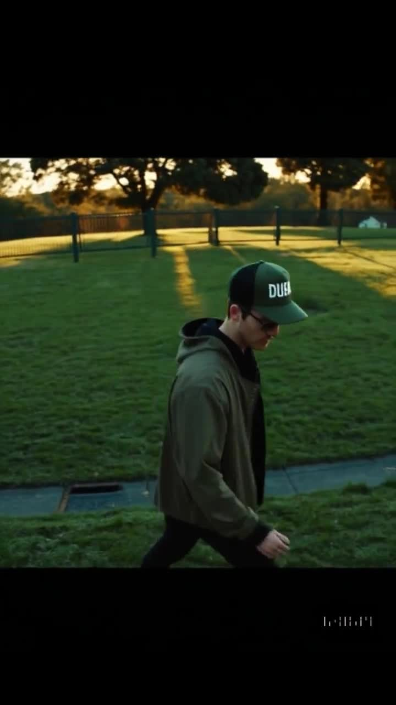
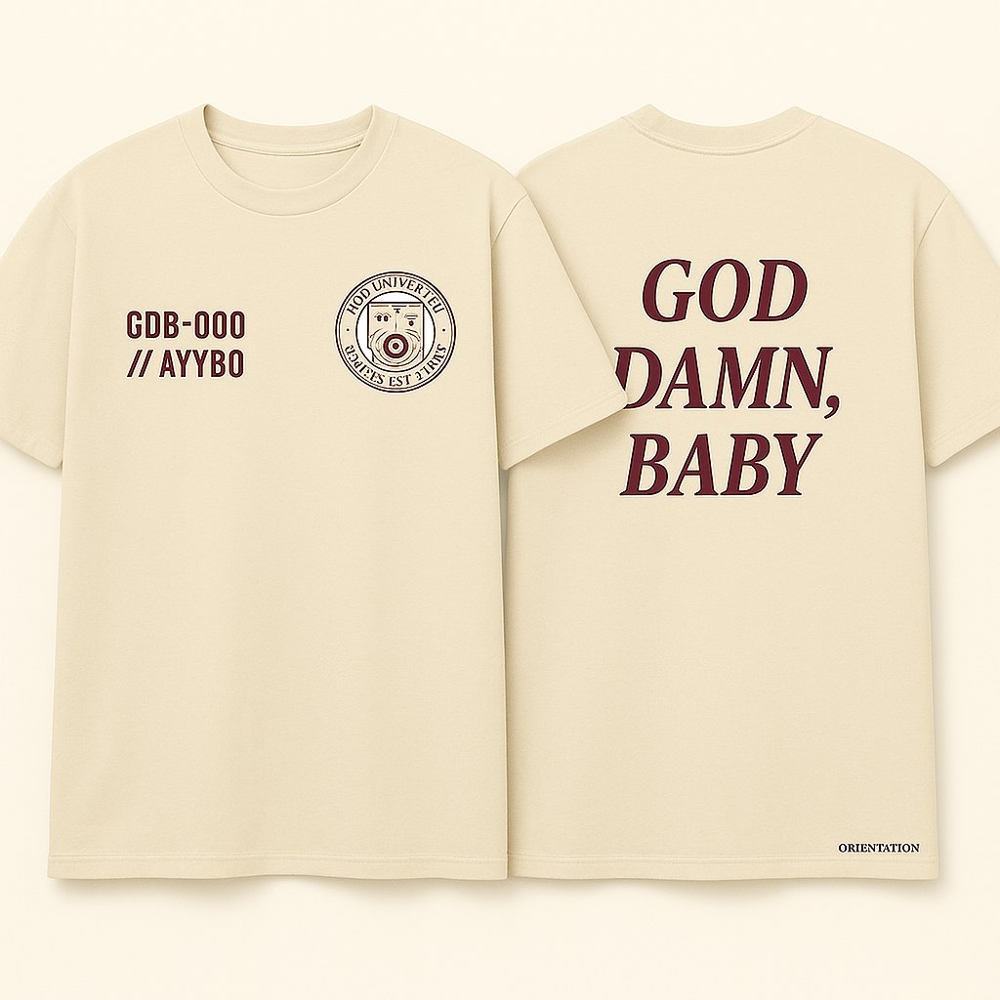
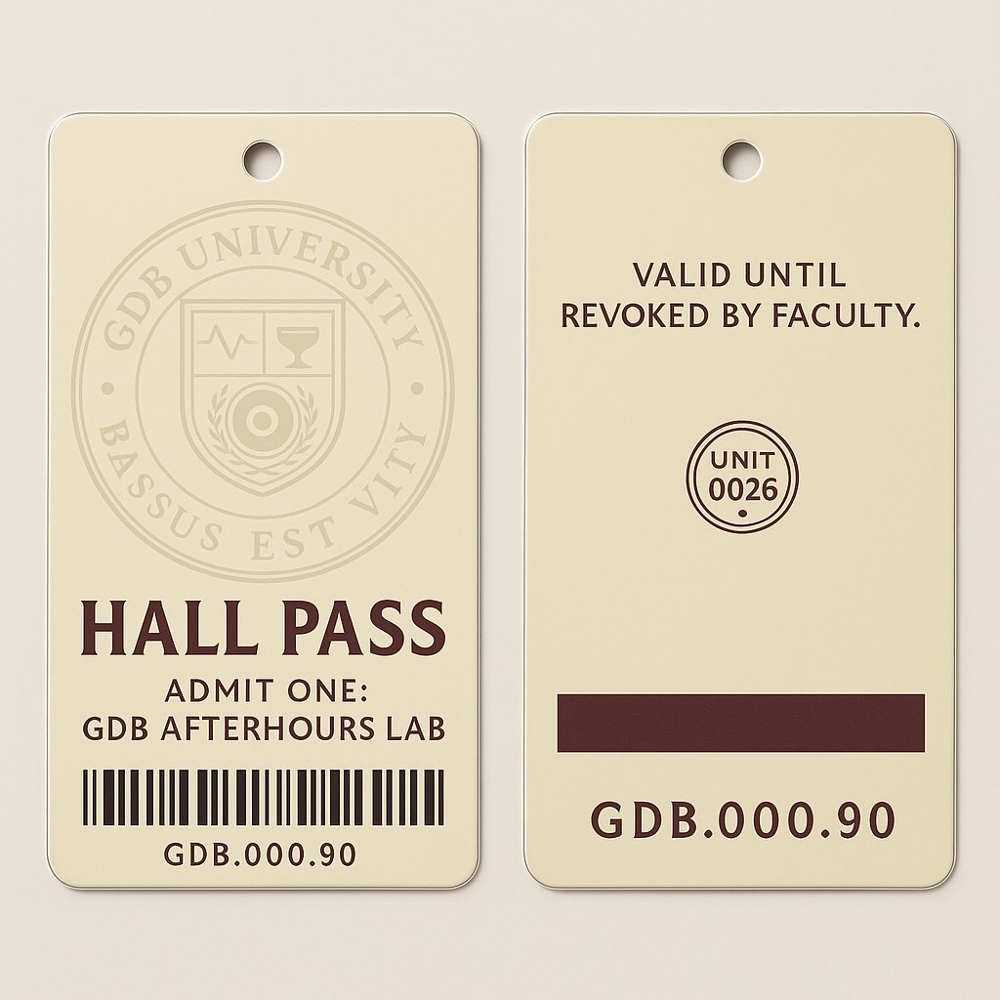
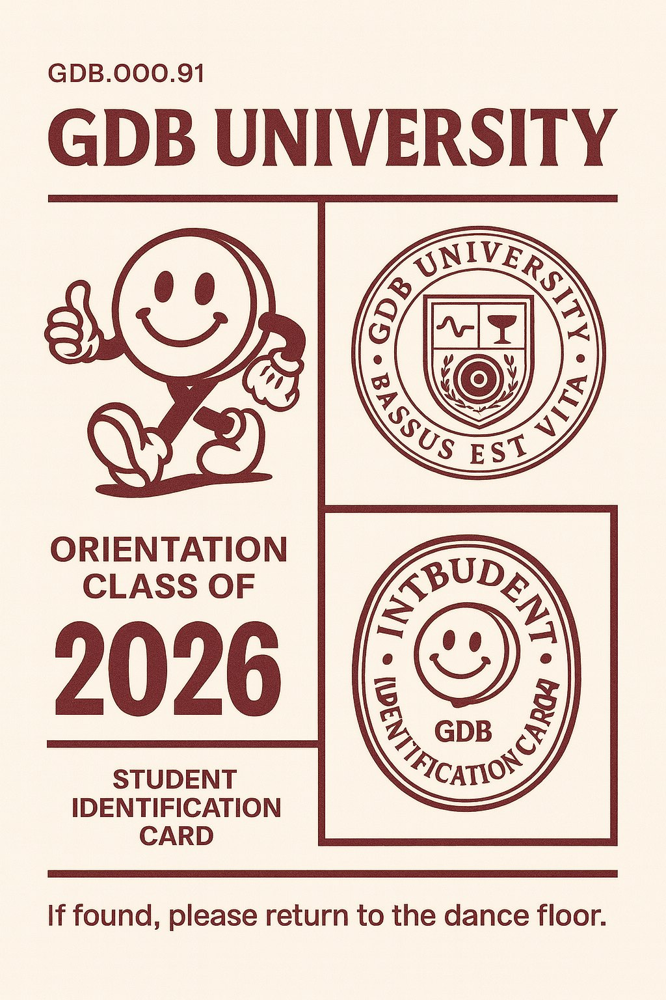

GDB.000.26ORIENTATIONHALL PASS ISSUED · CAMPUS IS OPEN
001 · Start here
Orientation
Student IDs, hall passes and your first excuse to return to the dance floor.
Begin orientation →GDB-000 · Orientation
Welcome to GDB University. A fictional campus for real nights. Come for the bass. Stay for your people, the fits and the inside jokes. Campus cosplay; attendance taken on the dancefloor.
You’re already in
Grab a hall pass. Follow a bassline into Low End Studies, find a fit in the Store, or lose track of time with the founding AYYBO collection.
Student IDs, hall passes and your first excuse to return to the dance floor.
Begin orientation →Low End Studies. Dancefloor Physics. Club Science. Rave Ethics. Your body picked the major before you did.
Browse academics →Real artists. Fictional appointments. The music is the syllabus.
Meet faculty →
The Quad, Library of Vibes, Rizz Lab, Nightclub and Sidechain Society.
Walk the campus →Orientation films, an AYYBO Matrix fan edit and a portal into the next late night.
Enter Media Lab →
Campus fits, tees, totes and collectible lore. A design archive to browse.
Browse artifacts →
The founding AYYBO collection, Certified GDB and the entirely unserious GDB Meter.
Open Records →
A living library of what actually existed before the campus website.
Enter archives →Four core programs
Pick your patch. Same campus, four ways to get carried away.
Basslines with bad manners. Subs, struts and the face you pull when the low end hits.
FEEL IT IN YOUR RIBS DFP-002One friend starts bouncing. The whole room catches it. Fieldwork beats the group chat.
THE FLOOR HAS THE ANSWER CLS-003The missing kick. The tiny hat. The drop you saw coming and still lost your mind over.
ONE MORE LAYER. THEN NONE. RVE-004Make room. Check on your people. The best fit on the floor is a little consideration.
LEAVE NO FRIEND BEHINDOrientation archive
A hall pass, a tee, a badge. Small things that say you found your people.
